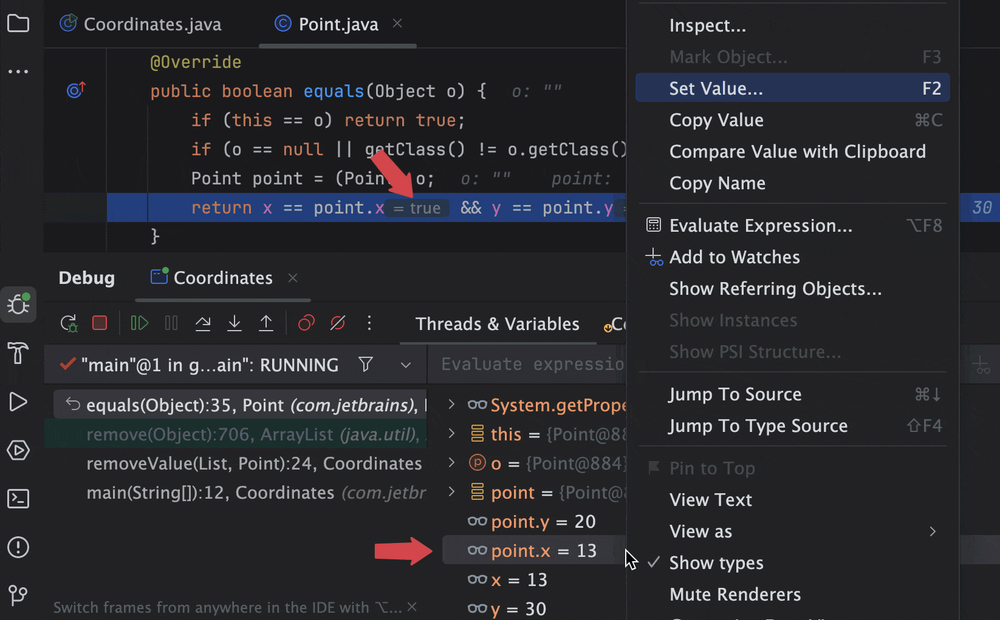
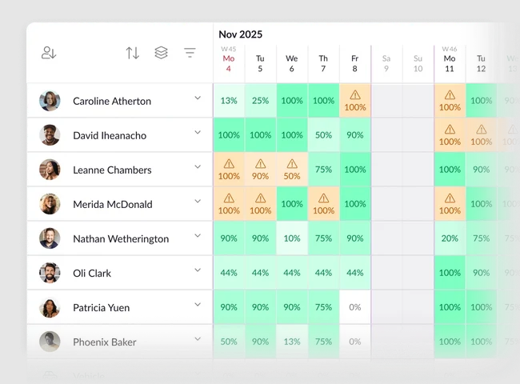
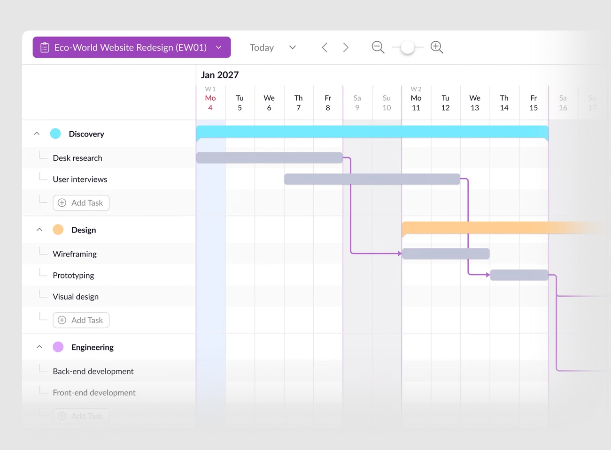
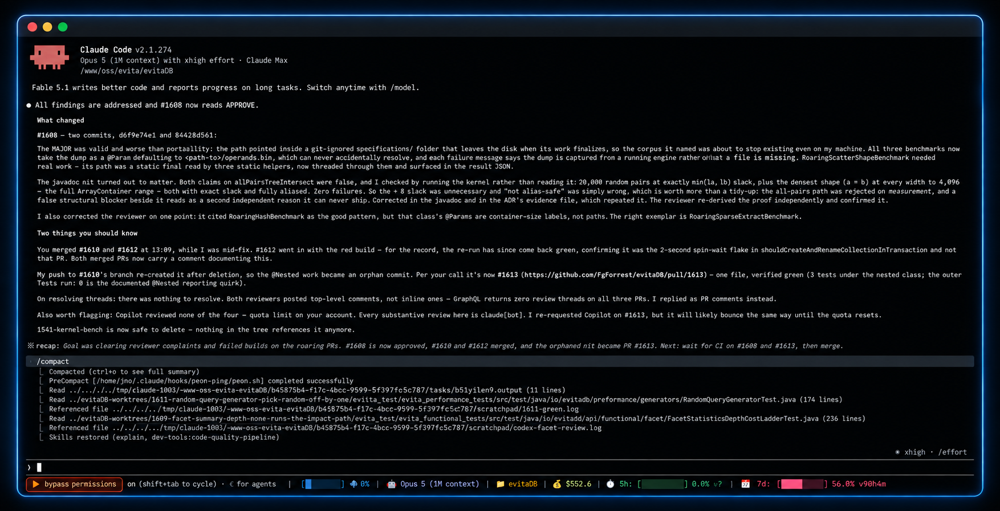
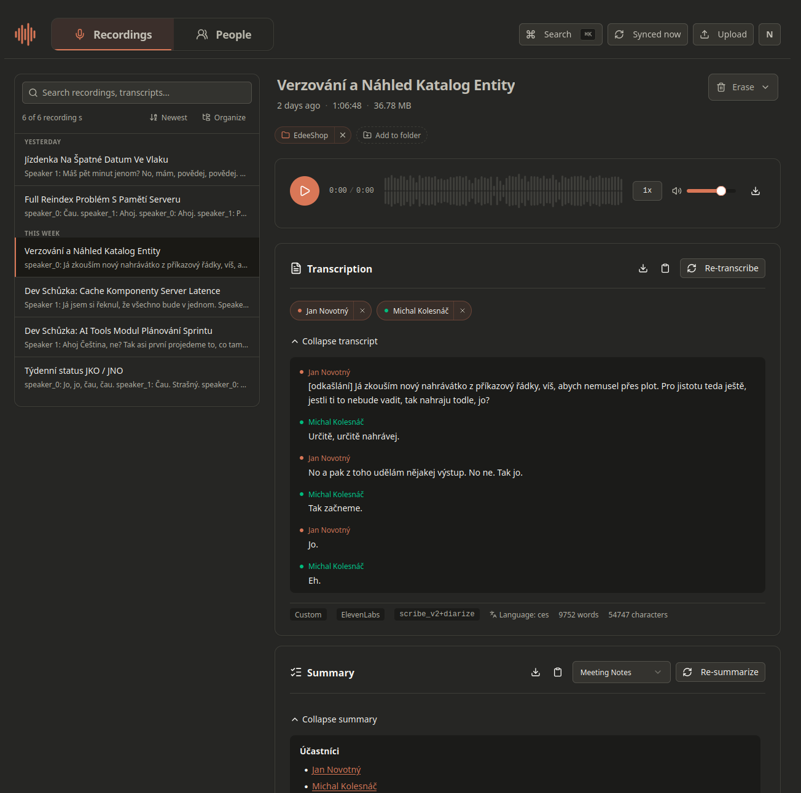
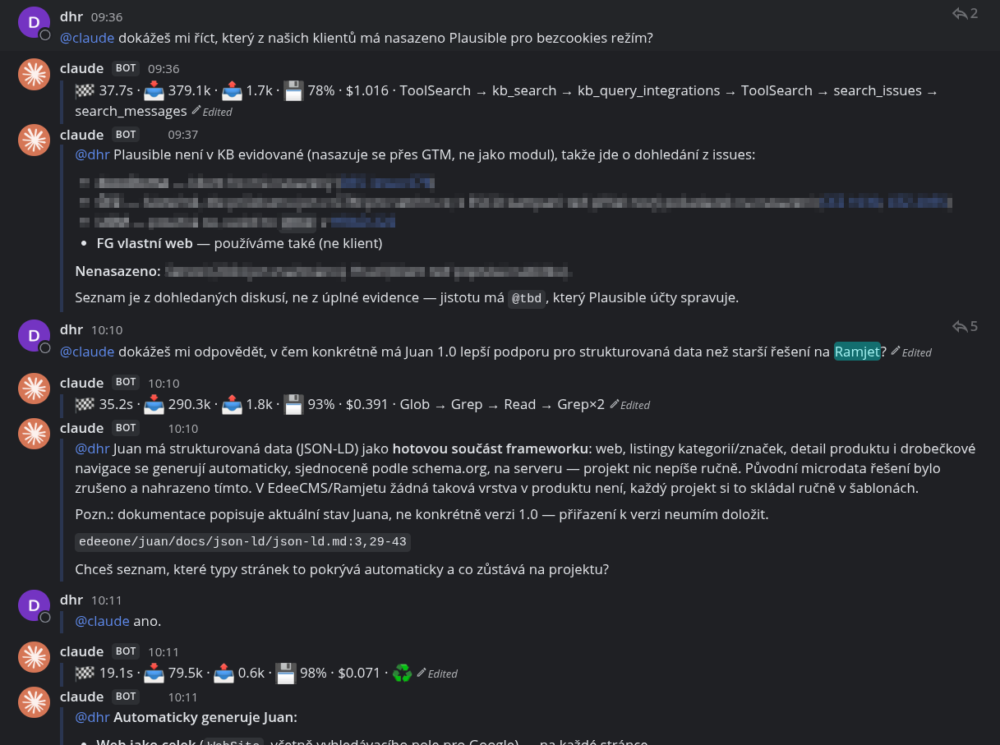
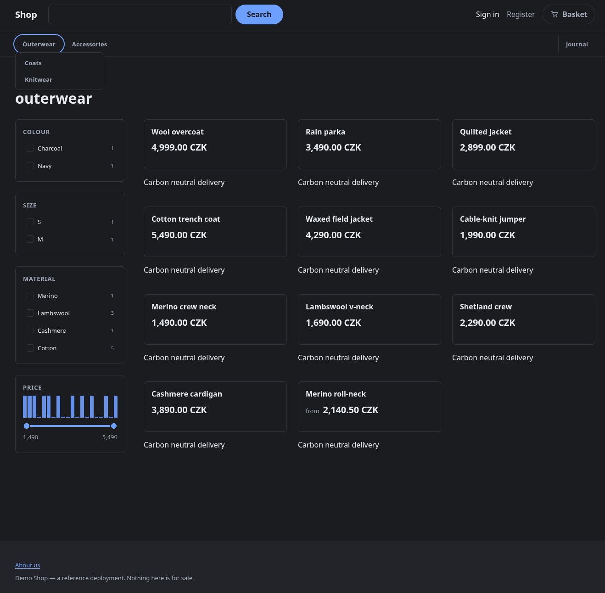
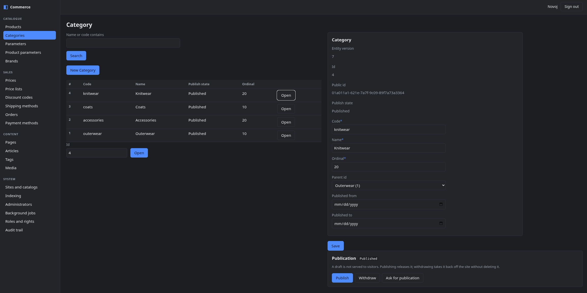

Ručně psaný kód
Já píšu.
Copilot doplňuje.
IDE · autocomplete
1 189přidaných řádků / odpracovaný den
103nových testovacích metod / měsíc
jOpenSpace 2026
Jan Novotný · @Novoj · evitaDB / FG Forrest
„Život je jako jízda na kole. Musíš se hýbat vpřed, abys neztratil rovnováhu.“
Albert EinsteinOtázka pro vás
V neděli po obědě bych rád uspořádal otevřený diskusní kruh: výměnu zkušeností, postřehů, tipů a úvah o tom, co AI prakticky odblokovala ve firmách i jednotlivcům.
Můj příběh
Já píšu.
Copilot doplňuje.
IDE · autocomplete
Agent píše.
Já vedu jeden úkol.
Claude Code · agentní vývoj
Agenti píší.
Já řídím paralelní práci.
subagenti · skills · proces
Odvrácená strana
Práce se mi rozlila do dalších dní, nocí a víkendů.
Odpracované dny / měsíc
+26 %19,9 → 22,0 → 25,1
Commity v noci
3×3,6 % → 5,3 % → 10,9 %
Commity o víkendu
2,2×11,2 % → 17,4 % → 24,2 %
Ne nutně více radosti. Hlavně větší chuť pokračovat.
Data neměří odpracované hodiny. Ukazují, že práce obsadila více kalendářních dní a větší podíl nocí a víkendů. Stejné tři éry: ručně → jeden agent → flotila.
První agentní release
První reálný release, do kterého šla primárně agentní práce — vlastní zkušenost doplněná veřejným repozitářem a produkční telemetrií.
Co zůstalo stejné
Neudělala rozhodnutí za mě (zatím).
Augmentace ve Forrestu
Jsme firma o zhruba 50 lidech — a právě velikost nám dovolila podmínky změnit rychle a pro všechny.
Realita změny
Klíčové osobní zkušenosti · 01
IntelliJ IDEA debugger za víkend
Můj osobní otvírák: agent konečně nečte jen logy a stacktrace — dívá se přímo do běžící JVM.
47 nástrojů: stav JVM · breakpointy a watchpointy · evaluace Java výrazů · změna hodnot za běhu · logpointy · vlákna a deadlocky
„Mám jen matné tušení, co a jak to dělá, ale používám to přes půl roku a funguje to báječně.“Nejmenovaný vývojář FG Forrest

Klíčové osobní zkušenosti · 02
7 let · ~100 tisíc Kč ročně
→ náhrada za 4 hodiny
Plánování lidí a projektů, kapacity a vytížení, Gantt, absence, timesheety, rozpočty, reporty a integrace.
Další 4 hodiny: integrace na naše systémy — tam, kde externí nástroj nikdy sahat neuměl.
„Kluci, tohle se mi líbí. Pokračujte!“Radovan Jelen, CEO


Klíčové osobní zkušenosti · 03
Izolovaný agent v Dockeru — jednotky týdnů práce
CLI pro spuštění Claude Code, Codexu či Gemini v sandboxu: projekt má k dispozici, hostitele ne.
Bezpečnostní základ: síťový gateway default deny · skryté soubory jako .env · non-root kontejner · po skončení vše zmizí.
„Na projekt vykopaný za pár dní je Díra nepříjemně blízko Docker Sandboxes.“ChatGPT 😉

Klíčové osobní zkušenosti · 04
Privátní ekosystém nad Plaud — vyšší jednotky dní
Open-source základ pro synchronizaci rekordéru, přepis, vyhledávání, shrnutí a exporty. Vlastní provoz, vlastní data, vlastní volba AI.
„Už nikdy nechci psát žádný záznam z jednání.“Novoj, Team Lead, FG Forrest

Klíčové osobní zkušenosti · 05
Claude vždy po ruce s téměř všemi informacemi z firmy
→ jednotky týdnů práce
Bot integrovaný do Mattermostu. Každý se může zeptat — a odpověď hledá v kontextu, který byl dosud roztříštěný po firmě.
Credits: Anthropic · Souki.cz
„Máme HEX. Jen bez mraveniště — a s Mattermostem.“Ponder Stibbons, Neviditelná univerzita · volná parafráze

Klíčové osobní zkušenosti · 06
15 let vývoje a zkušeností → týden práce
Storefront i administrační rozhraní: katalog, filtry, ceny, košík, objednávky a publikace obsahu nad evitaDB.
Samozřejmě: ještě není hotovo. Chce to došlechtit, umět provozovat a převzít za to odpovědnost. Ale výchozí cena se radikálně změnila.
„Máte sklep? A mohla bych ho vidět?“Anežka Jechová, Kulový blesk (1978)
„Zkusili jste si, za jak dlouho AI replikuje váš byznys?“Anežka Jechová, Kulový blesk (1978) — parafráze


Závěr
„Svět se mění: cítím to ve vodě, v zemi a ve vzduchu.“J. R. R. Tolkien, Návrat krále · Stromovous
Svět už nikdy nebude takový, jaký jste znali.
Jan Novotný · @Novoj
Hacker, Speaker, Father, Trainer · Team Lead, FG Forrest